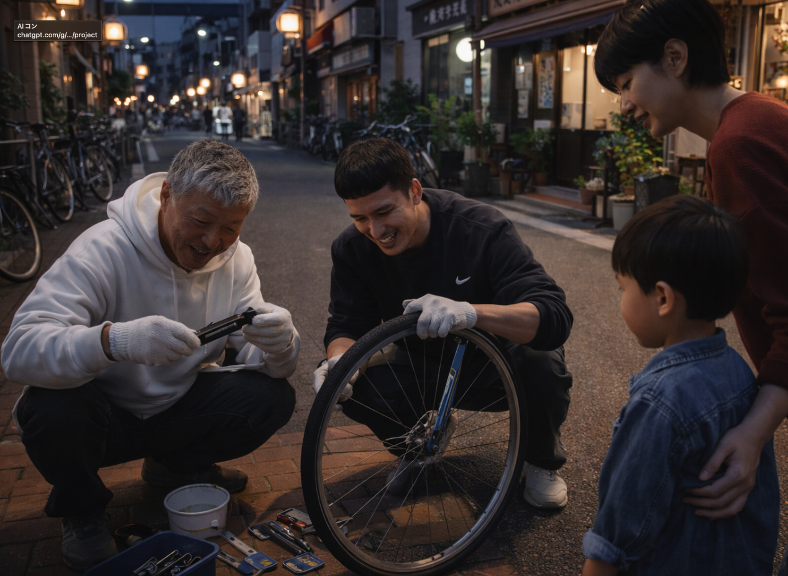
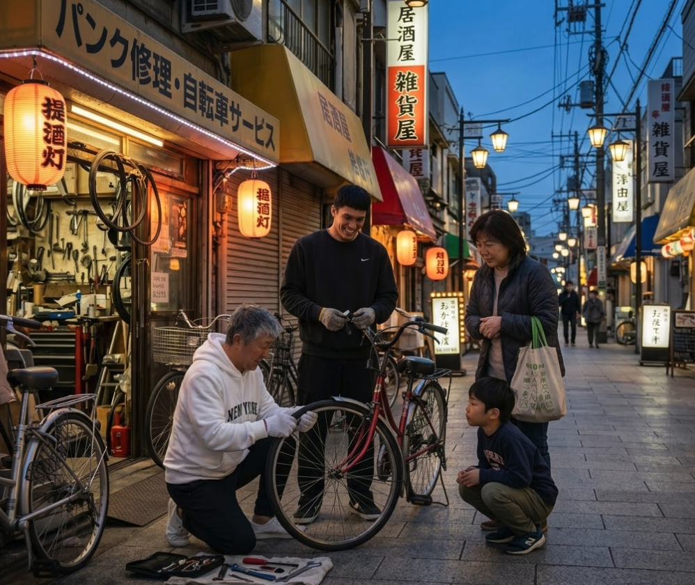

対応内容

大田区自転車パンク出張修理センターでは、
ご自宅前・駐輪場・外出先などへ出張して、その場で対応します。
-
自転車のパンク修理 ¥2,500円〜
空気抜け・スローパンクの確認
-
チューブ交換 ¥4,000円〜
タイヤまわりの点検を含む
-
バッテリー上がりの確認・対応 ¥3,000円〜
電動アシスト自転車の急な電源トラブルに
-
夜間の緊急出張対応 別途
夜道で立往生してしまった時の救済
「これも対応できる？」という内容も、まずはLINEでお送りください。
写真があると、よりスムーズにご案内できます。
対応エリア
久が原を拠点に、大田区を中心に出張対応しています。
お困りの場所まで伺いますので、まずはLINEで場所をお知らせください。
上記以外のエリアも、場所や時間帯によって対応できる場合があります。
大田区外でも近隣であれば対応可能なことがありますので、まずはご相談ください。
料金の目安
料金は作業内容・場所・時間帯によって変わります。
LINEで状態を送っていただければ、事前に概算をご案内します。
作業前に、料金の目安をご説明してから対応します。
状態によって金額が変わる場合がありますが、できるだけ分かりやすくご案内します。
- ※特殊な車体・部品・状態によっては、その場で対応できない場合があります。
- ※出張距離や夜間時間帯により、別途料金がかかる場合があります。
LINEでそのままご連絡ください
お急ぎの方は、
LINE通話 または LINEチャット でそのままご連絡ください。
「来れますか？」の一言だけでも大丈夫です。
チャットの場合は以下を送っていただけるとスムーズです
- 現在地または住所
- 自転車の状態
- 写真1枚
- 希望の時間帯
夜間やお急ぎの場合は、LINE通話の方が早くつながることがあります。
対応中は返信や折り返しまで少しお時間をいただく場合があります。
営業時間 平日 18:00 ～ 23:00
営業時間・受付情報
- 営業時間
- 平日 18:00 ～ 23:00
- 対応方法
- LINE通話 ／ LINEチャット
- 出張拠点
- 東京都大田区久が原
営業時間外や対応中などは、すぐに返信できない場合があります。
その場合も、確認でき次第順次ご連絡します。
お急ぎの場合はLINE通話をご利用ください。
ご依頼の流れ

-
Step 1
LINEで連絡
現在地、状態、写真をLINEで送ってください。急ぎの場合はLINE通話でも受付しています。
-
Step 2
状況確認・ご案内
対応可能かどうか、到着の目安、料金の目安をご案内します。
-
Step 3
現地へ出張・その場で対応
指定場所へ伺い、現地で確認のうえ修理・対応します。